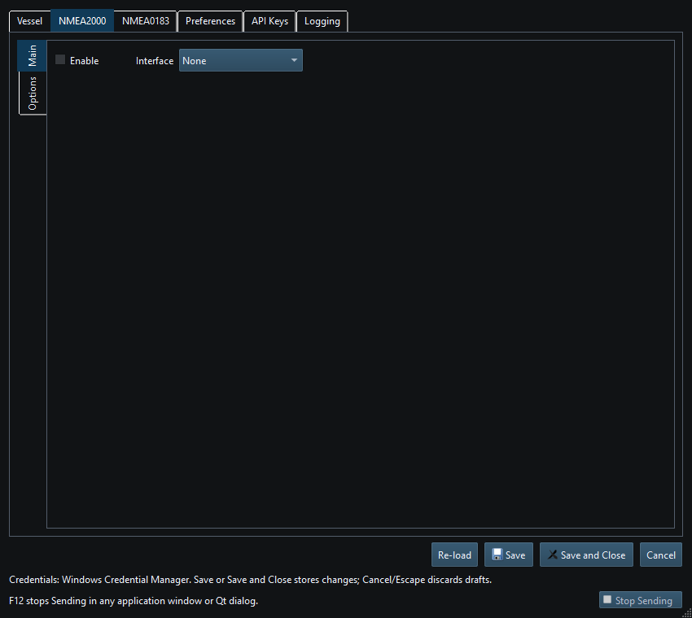

NMEA2000 instruments use PGNs and canonical property values over the selected CAN-capable transport. Adapter framing, address identity, physical connection and authorization remain separate layers.
| Interface | Ordinary RX/TX | Active chartplotter routes |
|---|---|---|
| Network NMEA2000 | Receive and send supported PGNs | Axiom route retrieval through the compatible bridge/client connection |
| Native SocketCAN | Receive and send supported PGNs on Linux | Route client available; target must support the required route service |
| CANable SLCAN | Receive and send supported PGNs on Windows/Linux | Route client available; target must support the required route service |
| Waveshare USB-CAN-A | Receive and send supported PGNs on Windows/Linux | Route client available; target must support the required route service |
| Actisense NGT-1 | RX supported; Release TX disabled; Debug TX experimental | Excluded, including Debug |
Use compatible adapter firmware, wiring and chartplotter service settings. Signal K publishes mapped measurements rather than raw CAN messages. Bridge Mode between arbitrary adapters is not available.
Viewer prevents ordinary instrument Sending but does not make every controller electrically silent. CAN ACK/error signaling and NMEA2000 protocol management can occur during connection/reception. Device discovery and route requests are separate explicit, bounded application operations; they must not silently start generators or navigation.
Do not repair a missing can0, USB permission or wiring problem by altering instrument values. Conversely, successful interface connection does not prove that a particular PGN is decoded, supported for TX or displayed by a receiving device. Use Diagnostics and a controlled independent receiver to separate those layers.

Figure 59. NMEA2000 interface settings in Setup. Click to enlarge.
NMEA0183 Overview · Network NMEA2000 · SocketCAN · CANable SLCAN · Waveshare USB-CAN-A · Actisense NGT-1 · Signal K · Device Discovery and Diagnostics · Connection Troubleshooting · Enable, Dispatch and Sending · Route Overview · Engineering Units